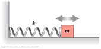
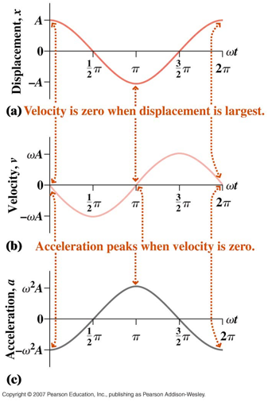
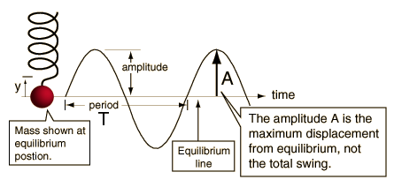
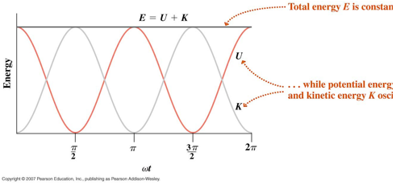

Simple Harmonic Motion (SHM)
"If an elderly
but distinguished scientist says that something is
possible he is almost certainly right, but if he says that
it is impossible he is very probably wrong"
Arthur C. Clarke
- Oscillatory motion is Simple Harmonic Motion
if the magnitude of the restoring force (FR ) is
linearly proportional to the magnitude of the displacement
(x) from equilibrium. This relationship is known as
Hooke's Law after the seventeenth century English physicist
Robert Hooke
.
FR = - k x
where
k is the constant of proportionality, commonly called the
"spring" constant, even for SHM not involving springs. The
negative sign indicates that the restoring force and the
displacement are measured in opposite directions.
- Using Newton’s second law for the motion of a
mass (m) attached to a spring on a horizontal surface, we
find,

This is a differential equation
with general solution,
where A and φ are
constants and , the angular frequency,
is given by
Since the solution for x is a
cosine function it repeats every 2π so that the period of
the oscillations, T, is
and the frequency, f is
Frequency
is
measured in Hertz
(Hz), 1 Hz = 1 s-1

- But what about the constants A and φ ? Their values are typically
determined by the initial conditions, that is the values of
x and dx/dt at t = 0. Substituting
the given initial values into the general solution we find
that A is the AMPLITUDE ,
the maximum value of the displacement.
φ is called the PHASE
CONSTANT.
- Note the behavior (at right) of the
displacement (x), velocity(dx/dt) and acceleration versus
time. These graphs are drawn
for φ = 0 .

Note that in
this diagram the displacement is labelled 'y' rather than 'x'.
- Frequency (and
period) is independent of the amplitude of the oscillations.
 SHM is the simplest type of
oscillatory motion. Oscillatory
motion can be expected so long as the restoring force is
opposite to the displacement. For
example the restoring force could be proportional to x3
rather than x; in this case the differential equation
obtained is much harder to solve. However,
for small amplitude displacements all
oscillatory motion is approximately simple harmonic.
SHM is the simplest type of
oscillatory motion. Oscillatory
motion can be expected so long as the restoring force is
opposite to the displacement. For
example the restoring force could be proportional to x3
rather than x; in this case the differential equation
obtained is much harder to solve. However,
for small amplitude displacements all
oscillatory motion is approximately simple harmonic.
- ENERGY
When an object undergoes SHM the
total energy of the system is made up of kinetic and potential
energies the relative amounts of which oscillate with the
frequency of the motion.
For example, in the case of a mass on a spring, kinetic energy (K) is converted to and from ELASTIC potential energy (U).
The dependence of K and U on both time and displacement
are indicated below, where we have used the solution for the
displacement as a function of time.
Note
that the total energy E, is constant,

as
demonstrated in the below figure for energy versus time.

"The prime minister held a meeting
with the cabinet today. He also spoke to the bookcase and
argued with the chest of drawers."
Ronnie Barker

Dr. C. L. Davis
Physics Department
University of Louisville
email: c.l.davis@louisville.edu